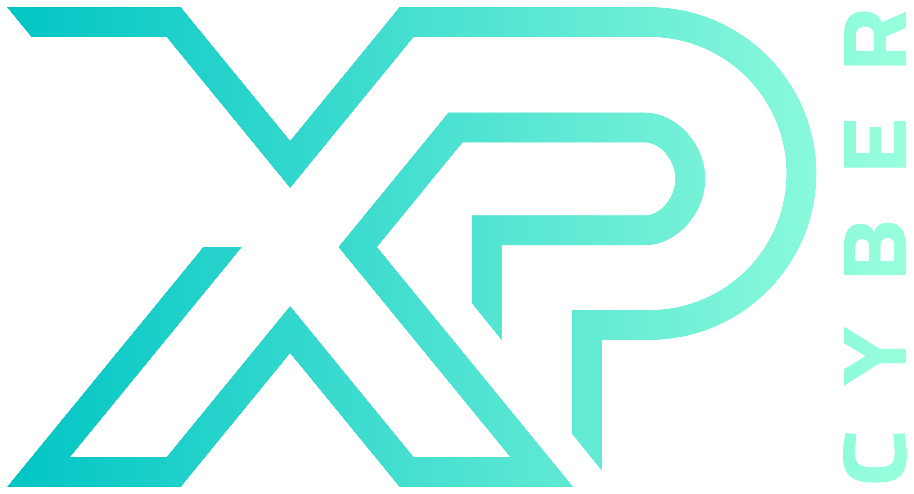

The XP Cyber Workforce Challenges and Cyber Range are developed and hosted at California State University, San Bernardino (CSUSB), by the CSUSB Center for Cyber and AI.
XP Cyber delivers students and educators across the United States real-world cybersecurity workforce challenges to enable the next generation cyber workforce. Our battle-tested cyber range and challenges immerse students in complex virtual environments and business scenarios where they complete tasks as in-demand cyber work roles.